Next: A Nonstrategic Moderating Model
Up: Coordination and Policy Moderation
Previous: A Model of Coordination
With survey data we observe choices reported by each elector  in
a sample of size ,
, along with a number of other
variables that affect electoral choices--a set of variables 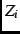. Given
and a set of parameter values, we use (10) to compute choice
probabilities
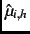. We adapt Mebane's (2000) method to compute
values
for each set of parameter values. Let
denote the subsample in districts with a fully contested race,
the subsample with an unopposed Democrat and
the
subsample with an unopposed Republican. Given sampling weights
in
a sample of size ,
, along with a number of other
variables that affect electoral choices--a set of variables 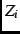. Given
and a set of parameter values, we use (10) to compute choice
probabilities
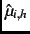. We adapt Mebane's (2000) method to compute
values
for each set of parameter values. Let
denote the subsample in districts with a fully contested race,
the subsample with an unopposed Democrat and
the
subsample with an unopposed Republican. Given sampling weights
 and values
, we compute:
and values
, we compute:
and
.
To define the empirical model, in (8a-c) we set
 and
and substitute
for
, where is a constant
parameter:
and
and substitute
for
, where is a constant
parameter:
Because the GEV distribution is implicitly standardized, 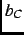 equals
 divided by the standard deviation of the elements of the
unstandardized disturbance.footnote We also use a technical
reparameterization of (9) in order to decrease the correlation
between the estimate of and the estimates of the parameters of
divided by the standard deviation of the elements of the
unstandardized disturbance.footnote We also use a technical
reparameterization of (9) in order to decrease the correlation
between the estimate of and the estimates of the parameters of
 and .footnote Instead of (9), we use 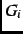 in
the form:
and .footnote Instead of (9), we use 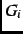 in
the form:
Given samples with subsets
,
and
, the log-likelihood function is:
where  if
if  and 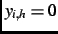 if 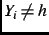, 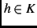.
Iterations to determine the parameter values include recomputation of each
year's
values at each iteration. The
estimation algorithm is similar to the one used in Mebane (2000). If the
likelihood function is correct and a stability condition (Mebane 2000, 43-44)
is satisfied, the algorithm converges to parameter estimates and
values that characterize the choices electors
make in equilibrium.
and 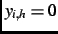 if 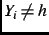, 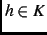.
Iterations to determine the parameter values include recomputation of each
year's
values at each iteration. The
estimation algorithm is similar to the one used in Mebane (2000). If the
likelihood function is correct and a stability condition (Mebane 2000, 43-44)
is satisfied, the algorithm converges to parameter estimates and
values that characterize the choices electors
make in equilibrium.
We check whether the estimated parameters satisfy conditions necessary for
coordination to exist. First we test whether : if 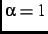, then
 so that electors' strategies depend on neither
nor
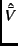 and there is no coordination. We use confidence interval
estimates and likelihood-ratio (LR) tests to check whether can be
rejected for each year of our data. The LR tests have a nonregularity because
the coordinating model does not depend on when . We use
equation (3.4) of Davies (1987, 36) to adjust the significance probabilities
of the test statistics. Also necessary for the choice model to describe
coordination are that and that : implies ; and
implies that
so that electors' strategies depend on neither
nor
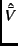 and there is no coordination. We use confidence interval
estimates and likelihood-ratio (LR) tests to check whether can be
rejected for each year of our data. The LR tests have a nonregularity because
the coordinating model does not depend on when . We use
equation (3.4) of Davies (1987, 36) to adjust the significance probabilities
of the test statistics. Also necessary for the choice model to describe
coordination are that and that : implies ; and
implies that  ,
and
do not
affect 's choice.
,
and
do not
affect 's choice.
Next: A Nonstrategic Moderating Model
Up: Coordination and Policy Moderation
Previous: A Model of Coordination
Jasjeet S. Sekhon
2001-06-28